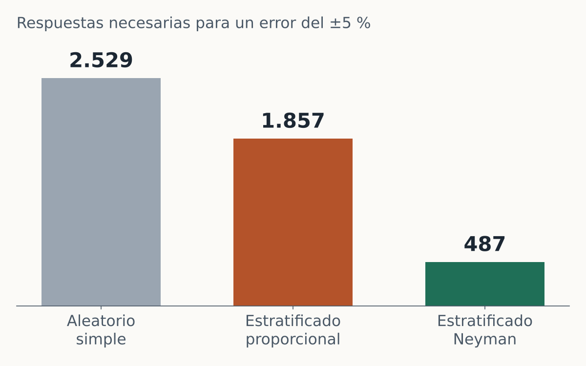
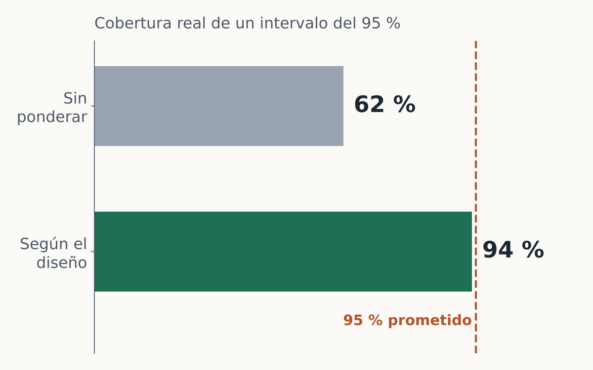
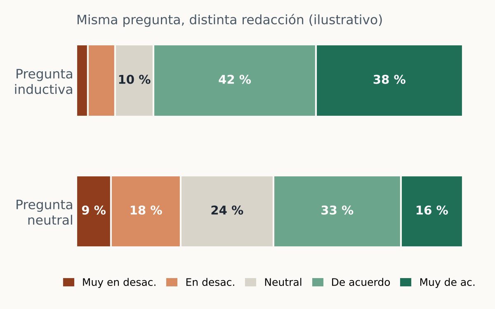

Darío Díaz · Científico de Datos y Estadístico
Datos bien medidos,
decisiones bien fundadas.
Acompaño a empresas, cámaras, cooperativas, consultoras y organizaciones privadas en todo el ciclo de la información: desde el diseño de la muestra y del cuestionario hasta el análisis y el modelo predictivo. También formo a sus equipos para que puedan continuar por su cuenta.
Todo el ciclo del dato, de la pregunta a la decisión
Diseño de muestras
Encuestas de mercado, satisfacción, clima laboral u opinión con un diseño probabilístico defendible y márgenes de error conocidos de antemano.
Cuestionarios y formularios
Redacción de preguntas, escalas, flujos de salto, validaciones y prueba piloto, en papel o en plataformas digitales.
Análisis de encuestas
Ponderación, estimaciones con errores estándar correctos, tablas con significación, índices y modelos sobre datos de encuesta.
Ciencia de datos
Modelos predictivos, segmentación de clientes, pronósticos de demanda, tableros y reportes automatizados en R y Python.
Análisis económico
Estudios de mercado y sectoriales, evaluación de proyectos, costos, precios y competitividad con herramientas econométricas.
Cursos y capacitaciones
Formación a medida en estadística, muestreo, R y Python, ciencia de datos e IA, con ejemplos construidos sobre problemas reales.
Doctor en Ciencias Económicas (UNC) · Magíster en Econometría (UTDT), en Métodos Cuantitativos (UBA), en Explotación de Datos (Austral) y en Políticas Públicas (FLACSO) · Doctorando en Estadística (UNR)
Conocer mi trayectoria →Así se ve el trabajo
Casos reproducibles con datos simulados o públicos, con el código completo a la vista.

La misma precisión con 81 % menos encuestas
Estratificación y asignación de Neyman para una encuesta a clientes de un mayorista.

Cuando el promedio simple engaña
Ponderación y errores estándar según el diseño en una encuesta de clima laboral.

Siete errores al redactar un formulario
Revisión de un cuestionario de satisfacción antes de salir a campo.
Un proceso claro, sin sorpresas
- 1
Diagnóstico sin costo
Una primera conversación para entender la pregunta de negocio y decidir si los datos pueden responderla.
- 2
Propuesta escrita
Alcance, método, plazos, entregables y honorarios definidos antes de comenzar.
- 3
Trabajo reproducible
Cada análisis queda documentado en código, para auditarlo, repetirlo y actualizarlo.
- 4
Entrega comprensible
Informes y tableros pensados para quien decide, con la técnica disponible para quien quiera revisarla.
¿Tiene datos y una decisión pendiente?
Cuénteme el problema en pocas líneas. La primera conversación no tiene costo.
Trabajo exclusivamente con datos propios del cliente o con fuentes públicas oficialmente difundidas, bajo acuerdo de confidencialidad. Leer la declaración de independencia y confidencialidad.